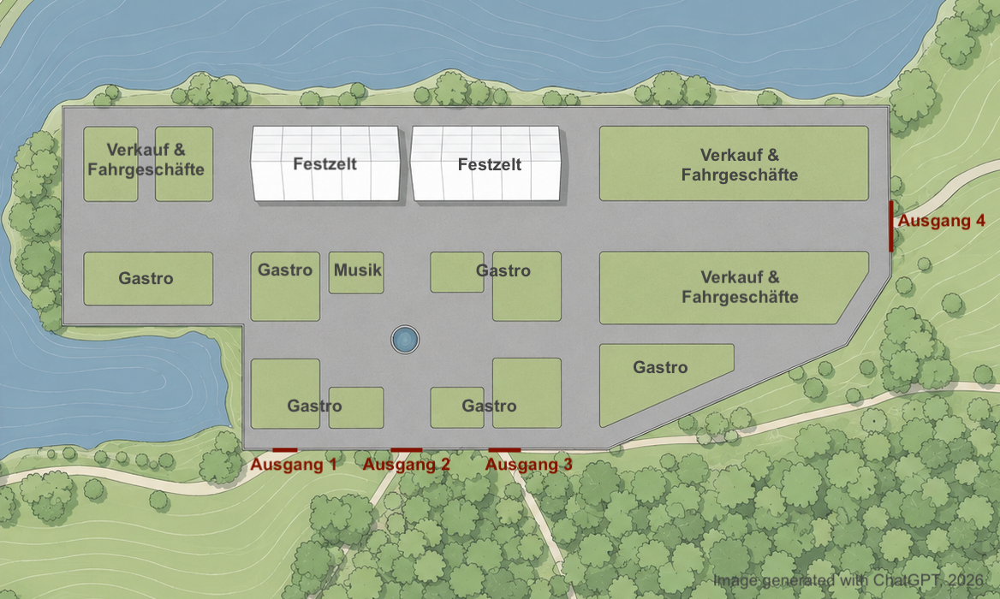
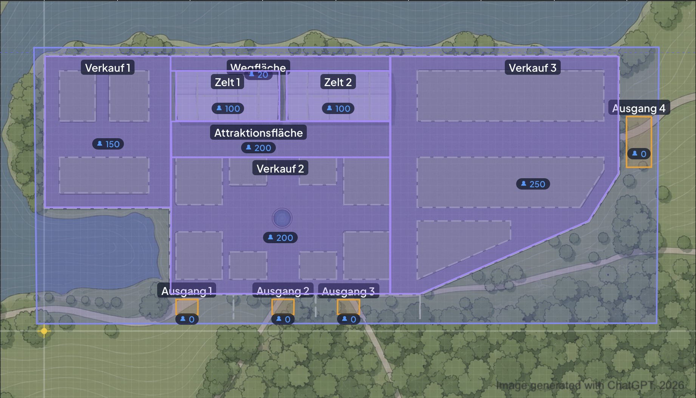
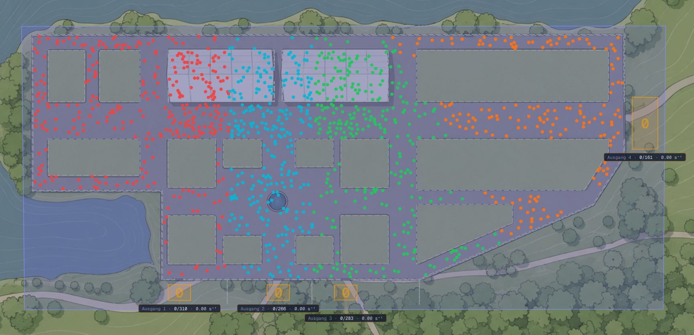

Im Rahmen der Planung und sicherheitstechnischen Bewertung von Veranstaltungen kann die Durchführung von Personenstromsimulationen einen wertvollen Beitrag zur Identifikation potenzieller Engstellen und zur Beurteilung der Leistungsfähigkeit von Flucht- und Rettungswegen leisten. Insbesondere bei Veranstaltungen auf temporär genutzten Flächen oder bei erstmalig bespielten Veranstaltungsgeländen können die Analysen eine Einschätzung der Räumungssituation geben und die Entwicklung weiterer Sicherheitsmaßnahmen unterstützen.
Anhand eines fiktiven Veranstaltungsszenarios werden im Folgenden
Die beschriebenen Szenarien wurden mit der Forschungssoftware JuPedSim simuliert und sind in der webbasierten Version app.jupedsim.org in der Szenarien-Galerie zu finden.
Für das Szenario wurde ein fiktives Volksfest in Hinterdupfing gewählt. Die Veranstaltung findet auf einem eingezäunten, unbefestigten Gelände statt, das an einen See grenzt. Auf dem Gelände sind zwei große Festzelte, mehrere Verkaufsstände sowie kleinere Fahrgeschäfte installiert und es wird Live-Musik von regionalen Bands gespielt. Die Veranstaltung wird in dieser Art auf dem Gelände erstmals durchgeführt, sodass keine Erfahrungswerte hinsichtlich der Geländenutzung und der Bewegung auf dem Gelände durch die Gäste vorliegen. Auch das Räumungsverhalten kann nur angenommen werden.

Da sich das Veranstaltungsgelände in der aktuellen Aufmaßplanung als verwinkelt darstellt, soll eine Räumungssimulation durchgeführt werden, um potenzielle Engstellen und Hindernisse zu detektieren.
Zum Zeitpunkt der Räumung gegen 18:00 Uhr ist das Veranstaltungsgelände mit insgesamt rund 1.000 Personen einschließlich Personals mit der maximalen Personenzahl belegt, es befinden sich somit alle erwarteten Besuchenden auf dem Gelände und der Einlass ist beendet. Aufgrund der Live-Musik sowie der Hauptnutzungszeit der gastronomischen Angebote herrscht eine höhere Auslastung einzelner Bereiche, die beiden Festzelte befinden sich in der Maximalbelegung und die Fläche vor den Zelten steht unter Vollauslastung.
Mit der Simulation sollen Bereiche identifiziert werden, in denen aufgrund der örtlichen Gegebenheiten Stauungen oder Kapazitätsengpässe auftreten können. Die Analyse soll insbesondere Aufschluss darüber geben, wie sich die vorhandenen Fluchtwegkapazitäten auf die Entwicklung der Personenströme auf dem Gelände und die Räumungsdauer auswirken.
Hinweis: Die in diesem Beispiel dargestellte Simulation stellt ein vereinfachtes Beispiel dar, dessen Ziel die Veranschaulichung der für eine Räumungsanalyse erforderlichen Eingangsparameter, Annahmen und Bewertungsmöglichkeiten ist. Die konkrete Modellierung realer Veranstaltungen kann darüber hinaus weitere Einflussgrößen, wie beispielsweise unterschiedliche Personengruppen, eingeschränkte Mobilität, wetterbedingte Einflüsse, Besucherlenkungsmaßnahmen oder alternative Räumungsstrategien berücksichtigen. Dadurch lassen sich veranstaltungsspezifische Fragestellungen detaillierter untersuchen und die Aussagekraft der Simulation weiter erhöhen.
Grundlage der hier betrachteten Simulation bildet der Flächenplan des Veranstaltungsgeländes mit sämtlichen Auf- und Einbauten, Nutz- und Wegeflächen sowie den (Not-)Ausgängen.
Die Notausgänge haben folgende Breiten:
| Notausgang | Breite |
|---|---|
| Ausgang 1 | 1,2 m |
| Ausgang 2 | 1,5 m |
| Ausgang 3 | 1,5 m |
| Ausgang 4 | 5,0 m |
| Gesamt | 9,2 m |
Für die verschiedenen Bereiche auf dem Gelände muss angegeben werden, wie viele Personen sich dort zum Zeitpunkt der Räumung befinden.
| Bereich | Personen |
|---|---|
| Verkauf 1 | 150 |
| Wegfläche hinter den Zelten | 20 |
| Zelt 1 | 100 |
| Zelt 2 | 100 |
| Attraktionsfläche vor den Zelten | 200 |
| Verkauf 2 | 200 |
| Verkauf 3 | 250 |
| Gesamt | 1.020 |
Es wird davon ausgegangen, dass sich die Personen in den einzelnen Flächen gleichmäßig verteilen.

Die Personen auf dem Gelände orientieren sich an den nächstgelegenen Ausgängen und wählen jeweils den kürzesten verfügbaren Weg. Maßnahmen zur gezielten Besucherlenkung werden im Basisszenario nicht berücksichtigt.
Für das Szenario wird ein altersmäßig gemischtes Publikum angenommen. Die Gehgeschwindigkeiten werden anhand der in der Fachliteratur häufig verwendeten Parameter nach Weidmann modelliert und eine mittlere freie Gehgeschwindigkeit von 1,34 m/s bei einer Standardabweichung von 0,26 m/s zugrunde gelegt. Aufgrund einer flächendeckenden Lautsprecheranlage wird für das Beispiel eine Reaktionszeit von 0 Sekunden angenommen, es bewegen sich also alle Personen unmittelbar nach Auslösung der Räumung in Richtung des nächstgelegenen Ausgangs.
Das Ergebnis der beispielhaften Personenstromsimulation ermöglicht eine erste grobe Bewertung der Räumungsabläufe für die Veranstaltung und liefert Hinweise auf potenzielle Engstellen sowie Optimierungsmöglichkeiten für die weitere Veranstaltungsplanung. Die dargestellten Ergebnisse beziehen sich auf die zuvor beschriebenen beispielhaften Randbedingungen und Annahmen. Sie stellen keine exakte Vorhersage eines potenziellen Räumungsverlaufs dar, sondern dienen der Veranschaulichung möglicher Personenströme und der möglichen Auswirkungen der vorhandenen Infrastruktur.
Hinweis: Leicht variierte Startpositionen (bei gleicher Personenanzahl) führen zu leicht unterschiedlichen Simulationsergebnissen, z. B. ergibt sich für 5 Durchläufe mit verschiedenen Startpositionen eine mittlere Räumungszeit von 230 Sekunden (± 17 s). Der Einfachheit halber bezieht sich die folgende Ergebnisbewertung ausschließlich auf das im Video gezeigte Szenario.
Unter den gewählten Simulationsparametern ergibt sich für die vollständige Räumung des Geländes eine Räumungszeit von etwa 3 Minuten und 40 Sekunden. Dieser Wert ist als Orientierungsgröße zu verstehen und dient insbesondere als Vergleichswert für verschiedene Planungsvarianten. Das tatsächliche Verhalten von Besuchenden kann im Ereignisfall von den in der Simulation getroffenen Annahmen abweichen, beispielsweise aufgrund individueller Entscheidungen, unterschiedlicher Wahrnehmung von Gefahren, nicht geplanten Hindernissen oder organisatorischer Maßnahmen vor Ort.
Die Personenströme zeigen eine insgesamt ungleichmäßige Auslastung der vorhandenen Ausgänge. Besonders auffällig ist die vergleichsweise geringe Beanspruchung des östlich gelegenen Ausgangs 4. Dieser Ausgang weist mit einer Breite von 5 m die größte Kapazität auf und wird innerhalb der Simulation bereits nach ca. 55 Sekunden nicht mehr genutzt. Die verbleibenden Personenströme konzentrieren sich anschließend überwiegend auf die anderen Ausgänge. Die Ausgänge 2 und 3 sind nach etwa 1 Minute und 40 Sekunden vollständig abgearbeitet, während der Ausgang 1 die längste Auslastungsdauer aufweist und somit die Gesamträumungszeit bestimmt.
Als wesentliche Ursache hierfür könnte anhand der Simulation die Aufteilung des Veranstaltungsgeländes und die Wegeführung identifiziert werden. Insbesondere im westlichen Teil des Veranstaltungsgeländes entstehen aufgrund der Anordnung der Aufbauten und somit der engen Wegeführungen Engstellen, welche zu Stauungen führen. Darüber hinaus stellen sich zwischen den beiden Festzelten zusammentreffende Personenströme aus unterschiedlichen Richtungen dar. So zeigt sich ein beeinträchtigter Personenfluss, welcher zu einer Verringerung der Abflussleistung führt im Rahmen der im Szenario dargestellten Strategie der Wahl des kürzesten Weges.

Zusammengefasst zeigt sich unter der Annahme der Wahl des kürzesten Weges eine Verteilung der Personen auf die einzelnen Ausgänge wie folgt:
| Ausgang | Personen |
|---|---|
| Ausgang 1 | 310 |
| Ausgang 2 | 266 |
| Ausgang 3 | 283 |
| Ausgang 4 | 161 |
| Gesamt | 1.020 |
Diese Zahlen verdeutlichen, dass in diesem Szenario voraussichtlich der leistungsfähigste Ausgang des Geländes von nur vergleichsweise wenigen Personen genutzt wird, während die kleineren Ausgänge deutlich stärker beansprucht werden.
Aus einem solchen Ergebnis lassen sich verschiedene Ansätze für die Weiterentwicklung der Geländeplanung und im zweiten Schritt auch des Räumungs- und Sicherheitskonzeptes ableiten:
Insgesamt zeigt das Beispiel, wie Personenstromsimulationen dazu beitragen können, die Auswirkungen von Flächenaufteilung, Wegführung und Besucherlenkung bereits in einer frühen Planungsphase sichtbar zu machen. Die identifizierten Engstellen und Belastungsschwerpunkte bilden eine fundierte Grundlage für die Bewertung alternativer Planungsvarianten und die Entwicklung eines belastbaren Räumungskonzeptes.
Aufbauend auf dem ursprünglichen Räumungsszenario wurde in einem zweiten Schritt untersucht, welchen Einfluss gezielte Anpassungen der Flächenplanung auf die Entwicklung der Personenströme haben können. Ziel dieses Szenarios ist es, die im Basisszenario identifizierten Engstellen vor allem auf dem Weg zu Ausgang 1 zu entschärfen, ohne dabei die grundsätzlichen Rahmenbedingungen der Veranstaltung zu verändern.
Die wesentlichen Eingangsparameter der Simulation bleiben unverändert und es werden im Szenario 2 zwei planerische Anpassungen vorgenommen. Zum einen wurden Aufbauten im Bereich „Verkauf 2“ verändert. Die kleinen Durchgänge zwischen den Verkaufsständen wurden geschlossen, um die Wegeführung zu verbessern. Zum anderen wurden die einander gegenüberliegenden Ausgänge der beiden Festzelte geschlossen. Diese Maßnahme soll verhindern, dass sich Personenströme aus unterschiedlichen Richtungen zwischen den Zelten kreuzen.
Durch die Neuordnung der Verkaufsflächen werden breitere und besser nutzbare Bewegungsräume geschaffen. Das Schließen kleinerer Wegungen sorgt darüber hinaus dafür, dass Besuchende frühzeitig auf Wegeführungen mit höherer Kapazität gelenkt werden und weniger Kreuzungsbewegungen entstehen. Hierdurch soll ein gleichmäßigerer Abfluss zu den vorhandenen Ausgängen erreicht werden.
Die Simulation zeigt, dass bereits vergleichsweise kleine Anpassungen der Flächenplanung spürbare Auswirkungen auf die Dynamik der Personenströme haben können. Die im Basisszenario identifizierten Konfliktpunkte im zentralen Bereich des Geländes werden reduziert. Insbesondere im Umfeld der beiden Festzelte entstehen geordnetere Personenströme mit weniger gegenseitigen Behinderungen.
Obwohl sich an Ausgang 1 immer noch die größte Belastung mit der längsten Räumungszeit darstellt, kann aus der Simulation des Szenarios 2 abgeleitet werden, dass die räumliche Organisation innerhalb des Geländes zu einer Verbesserung des Personenflusses führen und somit die Grundlage für eine effizientere Nutzung der vorhandenen Fluchtwege bilden kann.
Der Vergleich der Szenarien 1 und 2 verdeutlicht, dass die Leistungsfähigkeit eines Räumungskonzeptes nicht ausschließlich durch die Anzahl und Breite der Ausgänge bestimmt wird. Ebenso wichtig ist die Gestaltung der Flächen, Wegungen und der Ausgänge. Bereits geringfügige Veränderungen an der Anordnung von Aufbauten oder der Wegeführung können wesentliche Verbesserungen im Räumungsablauf bewirken.
Für die praktische Veranstaltungsplanung liefert das Szenario wertvolle Erkenntnisse. Die Untersuchung zeigt, dass Engstellen häufig nicht unmittelbar an den Ausgängen entstehen müssen, sondern innerhalb der Veranstaltungsfläche durch ungünstige Wegeführungen oder sich kreuzende Personenströme zustande kommen können. Durch eine frühzeitige Analyse können ggf. Schwachstellen bereits in der Planungsphase erkannt und gezielt behoben werden.
Aufbauend auf den oben beschriebenen Szenarien wurde ein drittes Simulationsszenario untersucht, um die Auswirkungen verschiedener planerischer Maßnahmen auf das Räumungsverhalten zu analysieren. Ziel ist es, die zuvor identifizierten Schwachstellen im Rahmen einer Räumung gezielt zu adressieren und die Robustheit des Räumungskonzeptes gegenüber dem Ausfall einzelner Infrastrukturelemente zu bewerten.
Für das Szenario 3 wurden die grundlegenden Randbedingungen des Szenarios 2 beibehalten. Es wird zusätzlich der vollständige Ausfall des Ausgangs 1 angenommen.
Das Ergebnis dieses Szenarios ist zunächst überraschend: Trotz des vollständigen Wegfalls eines Ausgangs zeigt die Simulation eine Verbesserung des Räumungsablaufs. Die Gesamträumungsdauer reduziert sich deutlich und es wird eine bessere Verteilung der Personen auf die verbleibenden Wegungen und Ausgänge erzielt.
Im Basisszenario führte die Orientierung auf den nächstgelegenen Ausgang dazu, dass sich erhebliche Personenmengen auf die schmalen Wege im westlichen Bereich konzentrierten. Ausgang 1 wurde von einer großen Anzahl von Personen angesteuert, obwohl die Zuwegung durch enge Gassen und mehrere Konfliktpunkte geprägt war. Die Leistungsfähigkeit des Ausgangs wurde somit nicht durch dessen Breite, sondern vor allem durch die vorgelagerten Engstellen bzw. zuführenden Wegungen begrenzt.
Durch den Wegfall des Ausgangs 1 werden die Besuchenden gezwungen, alternative Routen zu wählen und vermehrt die übrigen Ausgänge zu nutzen. Gleichzeitig sorgen die Anpassungen im Gelände für breitere und konfliktärmere Bewegungsräume. Insgesamt entsteht dadurch ein geordneteres und gleichmäßigeres Räumungsmuster mit weniger gegenseitigen Behinderungen.
| Szenario | Randbedingungen / Anpassungen | Wichtigste Erkenntnisse |
|---|---|---|
| Grundszenario | Basisszenario mit ursprünglichem Flächenplan; alle vier Notausgänge in Betrieb. | Räumungszeit ca. 3 min 40 s. Personen orientieren sich am nächstgelegenen Ausgang und wählen den kürzesten Weg – unabhängig von dessen Kapazität. Engstellen und Konflikte entstehen vor allem auf den schmalen Zuwegen zu Ausgang 1; Ausgang 4 wird nur schwach genutzt. |
| Szenario 2 | Anpassung der Aufbauten im Bereich „Verkauf 2“ und Schließen der kleinen Ausgänge zwischen den beiden Festzelten. | Geordnetere Personenströme im zentralen Bereich; Konflikte im Umfeld der Zelte werden deutlich reduziert. Ausgang 1 bleibt weiterhin am stärksten belastet, der Personenfluss innerhalb des Geländes verbessert sich jedoch spürbar. |
| Szenario 3 | Randbedingungen wie in Szenario 2, zusätzlich vollständiger Ausfall des Ausgangs 1. | Trotz reduzierter Ausgangskapazität kürzere Gesamträumungszeit und gleichmäßigere Verteilung auf die verbleibenden Ausgänge. Zeigt, dass nicht die Anzahl bzw. Breite der Ausgänge allein entscheidend ist, sondern deren Erreichbarkeit und die interne Wegeführung. |
Die Simulation dieses Szenarios zeigt, dass zusätzliche Ausgänge nicht zwangsläufig zu kürzeren Räumungszeiten führen müssen, wenn deren Erreichbarkeit durch Engstellen eingeschränkt wird oder sie ungünstige Personenstromkonflikte erzeugen. Umgekehrt kann eine gezielte Anpassung der Flächenplanung, der Wegeführung und der Besucherlenkung zu einer deutlichen Verbesserung der Räumungsleistung führen – selbst dann, wenn die verfügbare Ausgangskapazität nominell reduziert ist.
Für die weitere Planung würde sich daraus ein erheblicher Mehrwert ergeben. Die Simulation macht sichtbar, welche Auswirkungen einzelne Aufbauten, Wegeführungen oder Zugänge auf das Gesamtsystem haben. Dadurch können potenzielle Schwachstellen bereits in der Planungsphase erkannt und unterschiedliche Gestaltungsvarianten miteinander verglichen werden. Insbesondere bei erstmalig genutzten Veranstaltungsgeländen oder komplexen Aufbaukonfigurationen bietet die Personenstromsimulation eine weitere Möglichkeit, Entscheidungen auf datenbasierten Annahmen zu treffen und Räumungskonzepte gezielt zu optimieren. Im vorliegenden Beispiel wurde deutlich, dass nicht die Ausgangskapazität selbst den begrenzenden Faktor darstellte, sondern die interne Organisation der Personenströme auf dem Gelände.